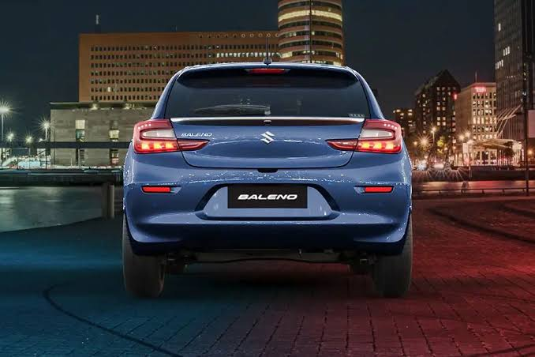

Bersertifikasi ISO 9001 dengan audit internal dan eksternal secara berkala.
Selengkapnya242 pekerja dibina melalui pelatihan intensif dan tim trainer di setiap bidang.
SelengkapnyaDibantu mesin pemotong otomatis, robot mixing dan injecting, serta mesin welding.
Selengkapnya
PT Suzuki Indomobil Motor Plant Cikarang Section Seat adalah perusahaan manufaktur di sektor otomotif. Section ini mulai dibentuk pada tahun 2015, seiring beroperasinya pabrik Cikarang sebagai fasilitas produksi kendaraan roda empat berteknologi modern. Perusahaan memutuskan memproduksi seat secara mandiri dengan membentuk Section Seat di GIIC Cikarang, satu lingkup dengan Section Assembly Body dan Section produksi lainnya.
Tahun Section Seat Dibentuk
Pekerja Section Seat
Bagian Proses Produksi
Menit per Unit (Takt Time)
Section Seat dibentuk seiring beroperasinya pabrik Cikarang. Seat dipandang sebagai komponen strategis terkait kenyamanan, ergonomi, dan keselamatan penumpang, sehingga dikelola secara internal agar spesifikasi teknis dan standar kualitas dapat dikendalikan penuh serta koordinasi dengan lini perakitan lebih efisien.
Section difokuskan mendukung produksi kendaraan dengan volume terbatas dan model tertentu. Sistem kerja disusun bertahap sesuai kapasitas pabrik yang masih berkembang, area kerja ditata agar aliran material lancar, dan standar kerja mulai ditetapkan sebagai pedoman operator.
Seiring meningkatnya volume produksi dan variasi model kendaraan, metode kerja dan pengendalian mutu dikembangkan. Pelatihan operator dilakukan berkala dan sistem inspeksi diperkuat untuk mencegah cacat produk yang berulang.
Section Seat menjadi bagian penting struktur produksi Plant Cikarang. Sistem kerja semakin matang dan adaptif terhadap perubahan desain produk dan target produksi, dengan sertifikasi ISO 9001, ISO 14001, dan penerapan SMK3.
Produksi mencakup trim, urethane (busa seat), headrest, rangka, dan assembly
Pekerjaan manual pada cutting dan sewing, proses lain dibantu mesin dan robot
Semua proses diarahkan menuju bagian assembly di sisi kanan gedung
Jadwal produksi mengikuti production planning dengan takt time 2,1 menit per unit
Bersertifikasi ISO 9001 (mutu) dan ISO 14001 (lingkungan)
Menerapkan sistem manajemen K3 dengan tim khusus dan sertifikasi ahli K3
Rapat pagi rutin supervisor dan manajer lapangan untuk perbaikan berkelanjutan
Menghadapi persaingan berat, termasuk masuknya mobil listrik dari produsen Tiongkok dengan harga lebih murah
Terdiri dari 242 pekerja. Cutting dibagi 2 line (sesuai jumlah mesin pemotong), bagian lainnya 3 line. Setiap bagian memiliki trainer yang berada di bawah penanggung jawab trainer dan koordinator Section Seat.
Leader Front
Leader 2nd
Leader 3rd
Masing-masing leader membawahi operatorLeader Front Cushion
Leader Front Back
Leader 2nd Cushion
Leader 2nd Back
Leader 3rd
Masing-masing leader membawahi operatorLeader Front R & Front L
Leader 2nd R & 2nd L
Leader 3rd R & 3rd L
Masing-masing leader membawahi operatorLeader Cutting
Leader Maekotei
Leader Urethane
Masing-masing leader membawahi operatorLeader Material Handling
Leader TPM
Leader Production Control
Masing-masing leader membawahi operatorLeader Safety & Administrasi
Leader Training
Leader Quality
Masing-masing leader membawahi operatorKawasan Industri GIIC, Block AC No.1, Sukamahi, Kec. Cikarang Pusat, Kabupaten Bekasi, Jawa Barat 17350
Section Seat berada satu lingkup dengan Section Assembly Body dan Section produksi lainnya
Pemasaran dan kantor pusat berada di Tambun
Buka di Google Maps